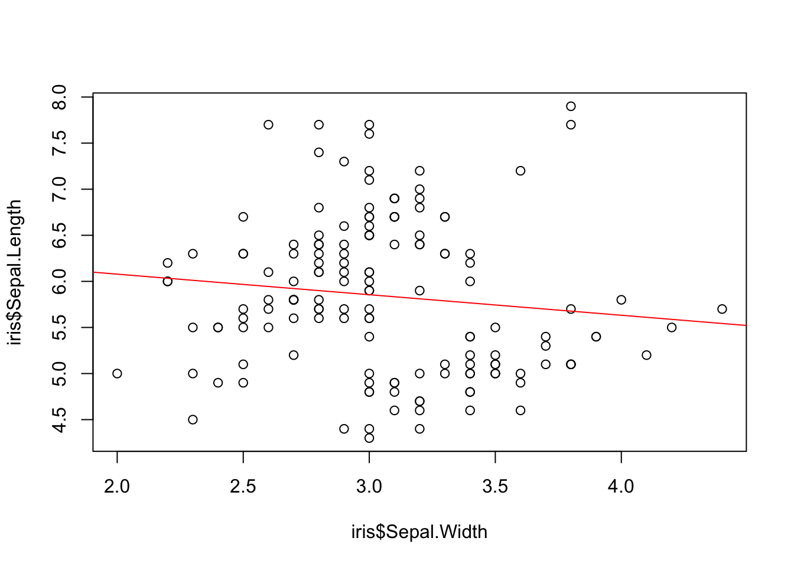
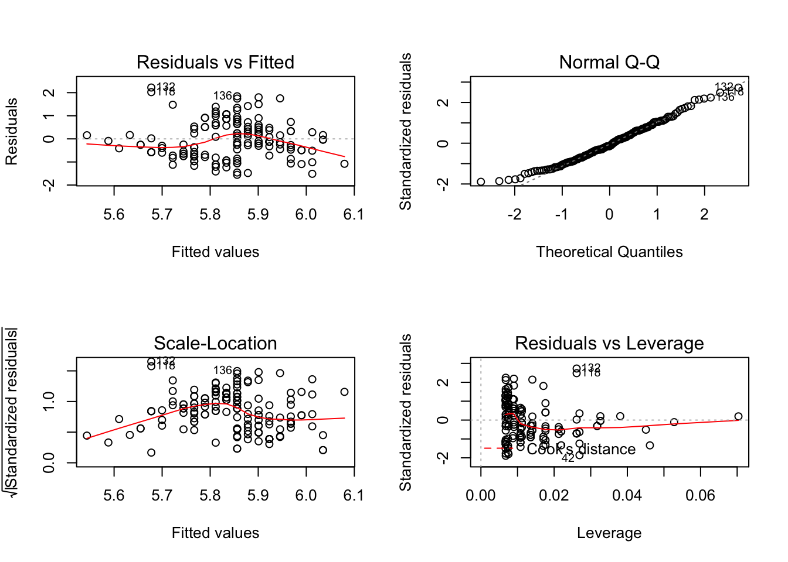
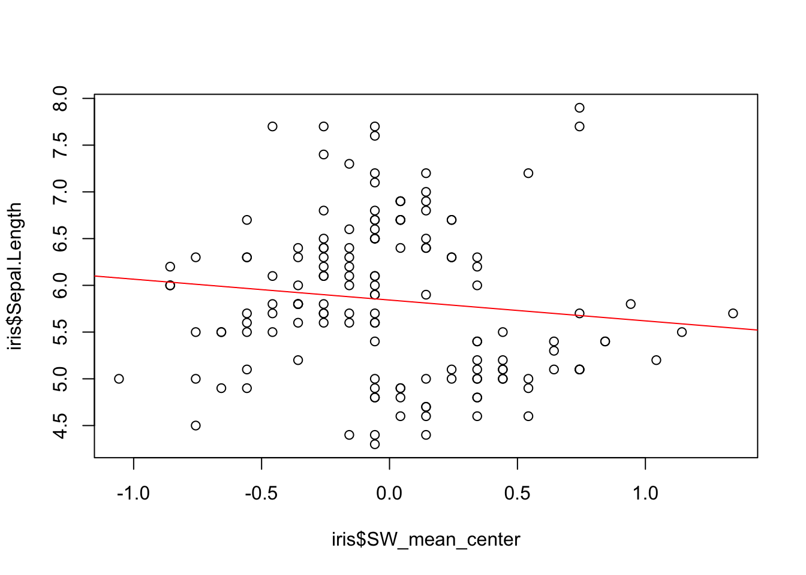

7 Simple Regression
In this chapter we’ll use the lm() function for fitting a simple regression model with one continuous predictor. This will be a quick and simple example that assumes the data is in tidy format and is ready for analysis. If this is not the case for you, you can take a look at Chapter 4 which covers basic data formatting.
Step 1: Importing
Step 2: Viewing
Let’s see what it looks like:
Sepal.Length Sepal.Width Petal.Length Petal.Width Species
1 5.1 3.5 1.4 0.2 setosa
2 4.9 3.0 1.4 0.2 setosa
3 4.7 3.2 1.3 0.2 setosa
4 4.6 3.1 1.5 0.2 setosa
5 5.0 3.6 1.4 0.2 setosa
6 5.4 3.9 1.7 0.4 setosaAs you can see, it’s a very simple datasest consisting of sepal lengths and widths, and petal lengths and widths for several (three) species of plants. Now let’s use the str function to see the structure of the dataset:
'data.frame': 150 obs. of 5 variables:
$ Sepal.Length: num 5.1 4.9 4.7 4.6 5 5.4 4.6 5 4.4 4.9 ...
$ Sepal.Width : num 3.5 3 3.2 3.1 3.6 3.9 3.4 3.4 2.9 3.1 ...
$ Petal.Length: num 1.4 1.4 1.3 1.5 1.4 1.7 1.4 1.5 1.4 1.5 ...
$ Petal.Width : num 0.2 0.2 0.2 0.2 0.2 0.4 0.3 0.2 0.2 0.1 ...
$ Species : Factor w/ 3 levels "setosa","versicolor",..: 1 1 1 1 1 1 1 1 1 1 ...This tells us a lot of good information. We have a data-frame, we know the dimensions, and we know the data types of the columns. The next step is typically formatting the data, but obviously there’s nothing to format here. So we’ll go straight to the modelling step.
Step 3: Formatting
Step 4: Modelling
The lm() Function
lm(formula, data, subset, weights, na.action,
method = "qr", model = TRUE, x = FALSE, y = FALSE, qr = TRUE,
singular.ok = TRUE, contrasts = NULL, offset, ...)The lm() (linear model) function is used for fitting linear models. Notice that there are many arguments for this function, but the formula argument is the only argument that needs to be specified. If you’d like to learn more about functions and arguments, please take a look at Chapter 2 which covers basic programming concepts, including functions and arguments.
Let’s take a look at how we can use the lm() function to make two models with the same variables using a simple regression: the untransformed linear model and a mean-centered model. For both models we’ll use Sepal Length as the dependent variable and Sepal Width as the independent variable.
Model 1: Untransformed
\[y_i\ =\ \beta_0\ +\ \beta_1\left(x_i\right)\ +\ e_i\]
The equation above represents the untransformed, simple regression model with one continuous predictor. Let’s implement this model with the lm() function. The dependent variable is listed first, followed by a tilda, ~, and then the independent variable(s).
Call:
lm(formula = Sepal.Length ~ Sepal.Width, data = iris)
Coefficients:
(Intercept) Sepal.Width
6.5262 -0.2234 The function prints out the slope and intercept for the model. We could then use the slope and intercept to create a plot with an abline:

The correlation looks weak, and it likely isn’t significant, but how can we be sure? The lm() function printed the coefficients but did not provide information about the R-squared or significance. To see this information, we need to save the model as an object, and then print the summary of the model, like so:
Call:
lm(formula = Sepal.Length ~ Sepal.Width, data = iris)
Residuals:
Min 1Q Median 3Q Max
-1.5561 -0.6333 -0.1120 0.5579 2.2226
Coefficients:
Estimate Std. Error t value Pr(>|t|)
(Intercept) 6.5262 0.4789 13.63 <2e-16 ***
Sepal.Width -0.2234 0.1551 -1.44 0.152
---
Signif. codes: 0 '***' 0.001 '**' 0.01 '*' 0.05 '.' 0.1 ' ' 1
Residual standard error: 0.8251 on 148 degrees of freedom
Multiple R-squared: 0.01382, Adjusted R-squared: 0.007159
F-statistic: 2.074 on 1 and 148 DF, p-value: 0.1519Now we have a nice summary print-out which includes the F-statistic, Residuals, R-squared, p-value, and more. What’s also nice is we can now use the plot function on the my_model object that we just created to view Residuals vs Fitted, Normal Q-Q, Scale-Location and Residuals vs Leverage plots.

What else can we do with the my_model object? Let’s take a look at the object’s attributes:
$names
[1] "coefficients" "residuals" "effects" "rank"
[5] "fitted.values" "assign" "qr" "df.residual"
[9] "xlevels" "call" "terms" "model"
$class
[1] "lm"The model’s attributes can be accessed by using a dollar sign, $. For example, here’s a printout of the first 5 residuals of our model:
1 2 3 4 5
-0.6444588 -0.9561394 -1.1114672 -1.2338033 -0.7221227 Model 2: Mean-Centered
\[y_i=\beta_0+\beta_1\left(x_i\ -\ \overline{x}\right)\ +\ e_i\]
In this example we’ll use the same variables as before but this time we’ll mean-center the independent/predictor variable. First, we create a column that consists of the sepal width mean, which is 3.06. Since there are 150 rows in the iris dataset, that means we are creating a column that has the value 3.06 repeated 150 times. This value is then saved into the column SW_mean; that’s what the first line of code in the code chunk below is doing. In the second line of code, each sepal width value is subtracted from the sepal width mean column, which is then stored in a new column called SW_mean_center.
# create a column that consists of the mean sepal width value
iris$SW_mean <- mean(iris$Sepal.Width)
# subtract sepal width column from mean column
iris$SW_mean_center <- iris$Sepal.Width - iris$SW_mean Let’s see what it looks like.
plot(iris$SW_mean_center, iris$Sepal.Length)
abline(lm(iris$Sepal.Length ~ iris$SW_mean_center), col = "red")
We can now use this mean-centered column as the dependent variable.
Call:
lm(formula = Sepal.Length ~ SW_mean_center, data = iris)
Coefficients:
(Intercept) SW_mean_center
5.8433 -0.2234